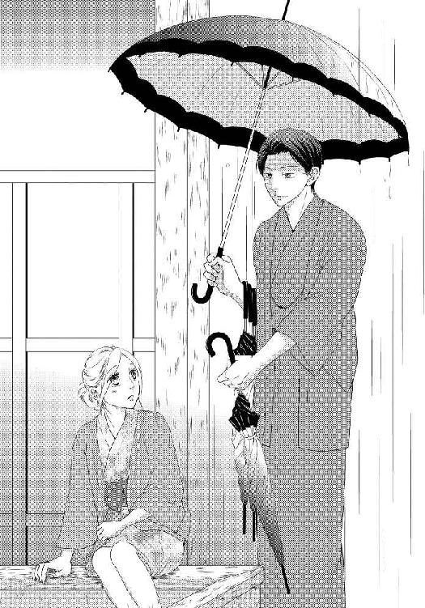
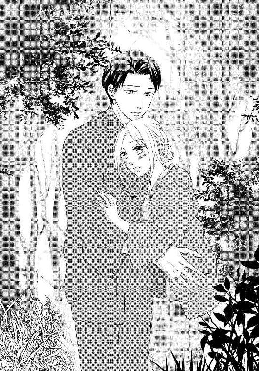
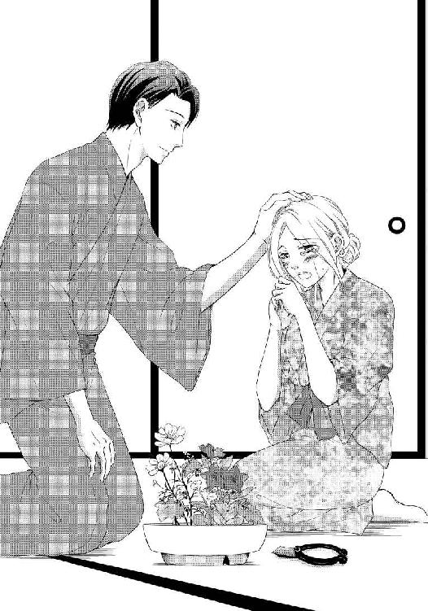
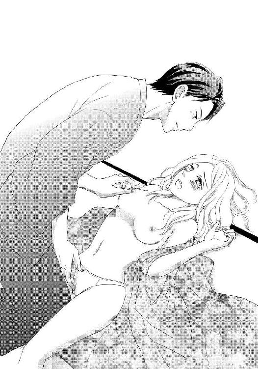

| イケメン若旦那は甘くとろける愛撫がお得意【イラスト入り】 (無敵恋愛S*girl) | |
| 栗谷あずみ | |
| 株式会社 ぶんか社 (2017) | |
株式会社 ぶんか社
イケメン若旦那は甘くとろける愛撫がお得意
栗谷あずみ・著
スミコ・イラスト
※本作品の内容はすべてフィクションです。
実在の人物・団体・事件などには一切関係ありません。
『久実。ごめん。旅行、行けない』
待ち合わせの十分前になって携帯電話に送られてきたメッセージ。私は恋人の身に事故や身内の不幸でもあったのかと、心配しながら電話をかけた。
「翔、何かあったの？ こっちは大丈夫だけど、何か私にできること、ある？」
『それがなー。実は、ええと......』
なぜか煮え切らない返事をする翔のそばで、突然知らない女性の焦れたような声が響く。
『もう！ 翔、はっきり伝えてよ』
『ちょっと、いいから』
『彼女とは別れてくれるって、ホテル入る前に約束したでしょう!?』
「......翔？ 誰かと一緒にいるの？ こんな朝早くに。ホテルってどういうこと？」
辛抱強く、今どこで何をしているのか尋ねても、翔はしばらく無言だった。
私は沈黙に耐えかねて、自分から最悪の想像を口にする。
「今、ホテルに一緒にいる人と付き合うから、私とは別れる、って......そういう話？ だから、旅行もできないって？」
『いや、まぁ......悪いとは思うんだけどさ。わかってくれよ、俺にも色々事情があるんだ』
（そんなの......わかりたくもないよ......）
目の前が真っ暗になった。
二十七歳の誕生日に欲しいものを聞かれ、
「モノはいいや。お互い仕事で疲れてるし、ちょっといい温泉旅館にでも泊まって、おいしいもの食べてのんびりしない？」
そう提案し、三カ月前から計画を練ってきた、二泊三日の温泉旅行。
ずっとあこがれていた旅館に予約を取り、観光地を調べ、旅程を組み立てる。百貨店のグループ会社の広告・企画部門で、広報紙や企画カタログなどの編集の仕事をしている私は、こうしたプラン作りが得意だった。普段のデートも、翔が喜ぶような最新スポットをがんばって調べ、毎回コースを作っていたのだ。
連休を取るために前倒しで仕事を片付け、どうにもならないぶんは同じ部署の同僚に引き受けてもらい、やっと迎えた日。
それが、こんなことになるなんて、想定外もいいところだった。
どう言って電話を切ったのか、よく覚えていない。翔の言い分があまりに一方的で、怒ることも泣くこともできなかった。家に引きこもり、人目を気にせず落ち込みたい気もしたが、連休明け、同僚に合わせる顔がないと思うと、ためらいが生まれた。「どうだった？」と、旅行のことが話題になるのは避けられないし、行ったことのない場所の作り話には無理が生じやすい。仕事の穴埋めをお願いした人には、お礼のおみやげだって渡さなければ。
（......行くだけ、行こうか。当日キャンセルは全額支払いだし、旅館だって仕込んだ料理を捨てなきゃならなくていいことなしだもの。せめて楽しんで、気分を変えてこよう......）
とりあえず、同僚には、予定どおり翔と旅行したと報告すれば、いらない気を使わせることもないし、私も傷心をいたずらに広げなくて済む。
名案だとその時は思い、新幹線に乗り込んだ。
しかし......。
初手でつまずいてしまった計画は、その後もトラブル続きになるものなのか。旅程に入れていた陶芸教室は臨時休業。ロープウェイは故障中。曇り空でＳＮＳ用の写真もきれいに撮れず、ひとりで人気飲食店の行列に並ぶのも気が引けて、結局観光らしい観光もできず、くたくたになるまで歩き回っただけで、旅館『御宿 翠湯』にチェックインしたのだった。
（ついてないなぁ......）
カランコロンと下駄を鳴らしながら、私は、昔ながらの湯治場の情緒を残した温泉街を歩いている。
川べりの柳が秋の風にそよぎ、湯けむりの中にぼうっとガス灯の明かりが浮かび上がる夕暮れ時の温泉街の、きれいだけど物さびしい雰囲気は、傷心気分をいやおうなしに盛り上げた。
太鼓橋の上を、外湯めぐり中の観光客たちが、浴衣姿でそぞろ歩いていく。和小物のみやげ店やご当地スイーツの店をひやかし、遊戯場の射的や輪投げに歓声を上げているのは、カップルか家族連ればかりだ。油断した瞬間、心に隙間風が吹き込みそうになって、私は慌てて足湯がある道端のあずまやに飛び込む。
（だめだめ。ちゃんと、楽しまないと。ひとりでも楽しむって、決めたんだから）
色浴衣の裾をたくしあげ、下駄を脱いで、足首までを足湯に浸けた。他に誰もいないことをいいことに、湯をぱちゃぱちゃ波立てていたが、突然前触れもなく空が暗くなり、激しい雨が降り始める。
屋根のある足湯だったので、頭から水をかぶるようなことはなかったが、雨の跳ね返りが体に当たる。じっとしていたら、上半身が冷えて風邪を引いてしまいそうだった。
かと言って、走って旅館に戻ろうとすれば、ずぶ濡れになってしまう。
（......お天気まで。ほんと、ついてない）
空模様にうらみごとを言っても仕方ないが、天にまで見放されている気がして、我慢の限界だった。目に涙の膜が浮かびそうになった時、背後に気配を感じる。
誰か、雨宿りに飛び込んできたのだろうか。
視線を向けると、その男性は柔和な笑顔を見せた。抹茶色の着物に同色の羽織を合わせているが、すっきりと余裕をもって着付けてあって、和装に慣れている人に見える。格好のために落ち着いて見えるが、三十歳前後だろう。雨と硫黄の匂いに、白檀と墨の混ざったような香りが溶けて、胸がどきどきした。
「こちらを」
「えっ」
男性が差し出す傘を、私はまばたきしながら見る。
こんなことがあるものだろうか？ 弱り切っている時に、ぴったりのタイミングで、助けてくれる人が現れるなんて。
私が何か言う前に、彼は続けた。
「お使いください。突然の雨で驚かれたことでしょう。『御宿 翠湯』の者です」
「......どうして、私が『翠湯』の客だと？」
「お召しの浴衣が、当館のものですから」
あっさりと運命的な登場の種明かしをして、男性はにこりと微笑む。
（そういうこと......）
肩すかし半分、納得半分という感じだった。
彼の手には数本の傘が抱えられている。外湯めぐりに出ている『御宿 翠湯』の客のため、熱心に雨の中を歩き回っているのだろう。高価そうな羽織の肩が濡れていた。それに気付いた瞬間、見て見ぬ振りができなくなってしまう。

「お心遣いありがとうございます。でも、あなたこそ、すごく濡れてしまってますよ」
思わず竹かごのバックからタオルを出し、椅子の上に立って男性の肩を拭いていた。
彼は驚いたように目を丸める。
「せっかく素敵なお着物をお召しなのに。シミにならないといいんですけど」
水気を拭き取るように軽く叩いていると、彼は、もういいですよ、と言うように私の手に触れた。困ったような顔をしている。
「ありがとうございます。お客様にこんなことまでしていただき、どうしたらいいものか......」
「すみません。つい、気になってしまって」
プランを立てることもそうだが、人の世話をつい焼いてしまう性分で、オカンのようだと友人や恋人に言われたことがあった。
恋人としては、色気がないという意味だったのかな、と、今更のように反省が浮かんでくる。
「いえ、ご親切感謝します。しかし、代わりにあなたのお足元を拭くものが必要ですね」
男性は懐から手拭いを出した。
「え......だ、大丈夫です、そんな」
「新しいものですからきれいです。濡れたまま履くと、滑りやすいので」
男性はひざを落として、私の下駄を履きやすい位置に直してくれる。
世話を焼くのは得意でも、焼かれるのは慣れていない。しかし無下に断るのも考え物だ。 私は礼を言って手拭いを受け取り、足を拭いた。
「あっ......す、すみません」
「構いませんよ。ゆっくり、焦らずに──失礼」
濡れた地面が滑るせいで、鼻緒になかなか足指を入れられない私を見かねたのか、男性は下駄を履く手伝いまでしてくれる。傍らに傘を置いてから、片手で私のふくらはぎを支え、逆の手でそっと下駄を合わせた。
（......まるで、ガラスの靴を履かせてもらう、シンデレラみたい）
こんなにもていねいに、まるで壊れやすいものを慈しむような手で触れられたことなど、最近、あっただろうか。
少なくとも、記憶にある限りはなかった。
（......何か、泣きそう）
旅館の客だから、丁重に遇されているのだと頭ではわかっていたが、指から伝わる体温と優しいもてなしが、ぼろぼろの傷心に響いて、胸があたたかいもので満たされる。
「宿の場所はおわかりになりますか」
差し出された彼の手を、ごく自然に取って立ち上がりながら、私は笑顔を浮かべた。
「わかります。ありがとうございました」
「いいえ。湯ざめする前にお戻りくださいね」
沁みるような笑みを返して、男性は傘を抱え直すと、雨の温泉街に消えていった。
（あの人、もしかして......）
彼の差す傘に印刷された『御宿 翠湯』の文字と親切な振る舞いに、ある人のことを思い出す。
私が仕事で作っている広報紙に、旅のモデルプランを紹介するコーナーがあり、二年前、『御宿 翠湯』もそこで取り上げたことがあった。
若旦那と数度メールのやり取りをする中で、文面から伝わってくる気遣いや優しさ、仕事への情熱に好感を持った。掲載誌を送った際には、きれいな押し花のカードで直筆の礼状を送ってきてくれて、疲れが吹き飛ぶような気持ちがしたものだ。それから、そのカードは、ずっと職場のデスクに飾っている。
そして、旅行がしたいと思った時、真っ先に『御宿 翠湯』が候補にあがった。
（あの人があの若旦那さんだとしたら......。ちゃんとご挨拶すればよかった。また会えるかな）
『御宿 翠湯』の部屋に戻ってゆっくりしていると、年配の仲居が、夕食を運んでもいいかと尋ねてきた。
同行者が都合でまだ来れていないので、ひとりぶんだけ運んでほしいと伝えると、人のよさそうな仲居は、想定以上にうろたえてしまう。
「まあ！ どうしましょう、お料理、もうご用意は整っているんですけど、でも」
「大丈夫です。彼のぶんのキャンセル料は全額お支払いしますので、料理は......」
「そんな、キャンセル料なんてもったいない。私、料理長に、夕食のお時間を遅らせることができないか、相談してまいります。お連れ様のご到着、何時になりそうでしょうか」
「さ、さあ、仕事の都合でいつになるか......」
翔のぶんの料理は従業員のまかないにでもしてもらえばいい、と思っていたが、そういうことが言えそうな空気ではなかった。
（女のひとり旅って、そんなに変かな。ドラマみたいに、自殺したり、殺人事件起こしたりなんてしないから、サラッと、ビジネスライクに処理してほしい......）
田舎の祖母を思わせるたたずまいの仲居に嘘をつく罪悪感で、胸が痛んだ。
それを振り切るように、これ以上はないというくらいに元気を振り絞って言う。
「あ、じゃあ私、彼氏のぶんもいただいちゃいましょうか！ 確かにキャンセル料、もったいないし。大丈夫です、私、フードファイターかってくらい、たくさん食べるので、気にせず、全部並べちゃってください！」
勢いで仲居を押し切り、日本酒を頼み、ヤケのように明るく酔っ払って、一夜あけ──。
（......く、苦しい......）
一晩経ってもまだ私の胃は消化しきれない四杯のカニを抱えてパンパンに張っていた。
今が旬の、殻いっぱいにふっくらとした身が詰まった松葉ガニのフルコースは、旅行で楽しみにしていたことのひとつだ。
ひとりで二人前というのは、流石に無謀だったが、仲居に言ったことの手前、途中でギブアップもできなかった。完全に自業自得だ。
夢の中でまで、折っても折っても再生するカニ脚と格闘していたような気がする。
（少し、動こう......）
私は客室備え付けの露天風呂で朝風呂を浴び、身支度を整えて、ロビーに向かった。
日本庭園に面したロビーには立派なソファや書棚が置かれ、ゆっくりくつろげるようになっている。時間が早いためか、他の宿泊客の姿はないが、一角に設けられた畳のスペースに、昨日の男性が端座しているのを見つけた。彼は新聞紙に包んだ切花を静かに見つめていたが、私が近付いていくと、顔をあげて会釈する。
「おや。坂崎様、おはようございます。昨日はありがとうございました」
「おはようございます。こちらこそ、親切にしていただいて......」
名乗る前から名字を呼ばれ、心臓が跳ねた。
私のことを知っているのだとしたら、やっぱり彼は......。
「あの。もしかして、こちらの旅館の、若旦那さんですか？」
「はい。楢井と申します」
彼は握った拳をももに置き、折り目正しく頭を下げる。
（やっぱり......！ あの時の、担当の方だ。ご挨拶して、お礼を言わなきゃ）
勢い込むものの、すぐに気持ちがしぼんでしまった。
（でも、二年前のこと、本当に覚えてるのかな。ここは人気旅館で、たくさんメディアに取り上げられてるから、一広報紙の担当者の名前なんて覚えてないんじゃ。......そうだ、私はひとりで泊まってカニ四杯たいらげた変わった客だから、それで名前が宿のみなさんに共有されているだけなのかも。......恥ずかしい）
二年前の仕事はミスなくしっかり務めたつもりだ。そのイメージに、プライベートの一番冴えない自分を上書きするのは、ためらいがある。実際はこんな不完全な人だったのか、と失望されたくなかった。楢井さんが気付かない限り、このまま、客として振る舞い続けた方がいいのかもしれない......。
「失礼。お顔が赤いですが、坂崎様、熱がおありなのではありませんか」
恥ずかしさのためか、自分でもわかるくらい熱くなっていた私の額に、楢井さんは掌を押し当てた。至近距離から切れ長の瞳に覗き込まれ、ますます体温が上がった気がする。
私の内心の動揺には気付かない様子で、楢井さんは首を捻った。
「平熱にも思えますがね......それにしては」
「だ、大丈夫、さっき朝風呂に入ったので、そのせいだと思います」
「そうですか。今日も天候が不安定なようなので、お出かけの際は傘をお持ちください。今は止んでいるようですが」
「今日も雨ですか......残念」
掌が離れていった後も、まだ心臓がどきどきしていた。私は、彼を必要以上に意識していることを悟られないよう目をそらし、演技がかった溜め息をつく。
「本日は、どちらまで？」
「海岸公園の方へ、レンタカーでドライブする予定だったんですが、その、連れが仕事のトラブルで、まだ来られなくて。私は免許を持っていないので」
同行者の話題になった時、気のせいか、楢井さんの視線が鋭くなった気がした。
「......近場で何か時間潰しができればいいんですが。陶芸教室はしばらく臨時休業ってあったし、散策もお天気が悪い中では......。せっかくがんばって考えたプランは全滅で、運に見放されてるとしか思えません」
落ち込む私の前で、楢井さんは花を脇に片付け、下駄を履いた。
「坂崎様。お付き合いいただけませんか」
「え？」
「少し、外を一緒に歩きましょう」
強引にも思える誘いだが、相手が楢井さんだからか、あまり悪い気はしなかった。
寒いので、と渡された羽織に袖を通すと、彼の香りがしっとりと私の体に覆いかぶさる。
案内されるままに太鼓橋を渡り、もみじの並木を抜けると、足元に舗装がなくなり、いつの間にかうっそうと茂る山の中にいた。
「この先です。足元にお気を付け......危ない！」
先ほどまで降っていたとおぼしき雨に濡れ、野の草は露をまとっている。わずかに傾斜した道に下駄を乗せた瞬間、ずるりと滑った。
楢井さんの腕が、ぐい、と私の腕を引く。
「す、すみません......」
言われた直後にドジを踏んでしまい、私は恥じいってうつむいた。和装で身動きが取りにくいのは楢井さんも同じだろうに、精悍な体は私をしっかり支えて揺るぎもしない。
「やはり、風邪ぎみなのでは？」
顔が熱いのも、心拍が速いのも、楢井さんに抱かれ、そのたくましい体の感触を思い知らされているからだ、と思いつつ、まさかそれをそのまま伝えるわけにはいかない。私は体勢を立て直し、言った。
「いえっ、大丈夫。元気です。行きましょう。運動不足で息が弾んでしまって......ジム通いしたいんですけど、休日はなかなか......」
声が段々小さくなってしまう。
休日は急に翔が会いたがるかもしれない、と予定を入れないようにしていたが、思い返してみれば、デートに誘うのはいつも私だった。
面倒くさがりな翔のかわりに、世話焼きの自分が計画を立てているだけだと思い込んでいたが、会いたい気持ちの量は、ずっと、釣り合っていなかったのかもしれない。
（もう、ジム通いだろうと、何だろうと、好きに休日を過ごせばいいんだ）
そう思いながら、白紙に戻った『これからの予定』を前に、不安な気持ちの方が強かった。
「坂崎様」
足元を見て斜面をのぼっていると、前を歩いていた楢井さんが私を呼ぶ。
声につられて顔をあげ、目を疑った。
「......わぁ」
視線の先の渓谷には薄く朝靄が漂い、赤や黄色やオレンジに色づいた紅葉が朝日に透けている。清流には葉が大量に落ちて、見事な絨毯を織り上げていた。
楢井さんは比較的傾斜のゆるい斜面を下りていき、もみじを数枚拾い上げて、懐から出した手拭いに包む。そして私のところまで戻ってくると、そのうちの一枚を手渡してくれた。
「どうぞ」
「きれい......」
冷たい水に磨かれたのか、渡されたもみじはなまめかしいほど鮮やかな色をしている。
「私が知る限り、今がここ一帯の一番美しい季節です。ちょうどいい時にいらっしゃいましたよ。......少しは気晴らしになりましたか」
「はい、とても」
「よかった。プラン外の行動も、そう悪いものではないでしょう？」
腕を組むように、手を着物の両袖に突っ込んで、楢井さんは目元を和らげた。そうすると目尻のしわが深くなり、優しげな表情になる。
旅館の若旦那と客というより、ひとりの人間と人間として、踏み込んだ話をしても許されるような気がして、私は心のガードを少しくつろげた。
「もしかして、ご心配をおかけしてしまいました？ 連れもなしで、ひとりで温泉宿に泊まるなんて、変わってますよね」
「それは、お客様のライフスタイルですから」
「いいんです、はっきり言ってくださって。旅行直前に彼氏と別れてしまったんです。でも、ずっとここに来るの、楽しみにしてたから」
「......ご予約は二名様でしたから、ご事情がおありなのだろう、とは思っておりました。お部屋付きの仲居は、屈託なく夕食を楽しんでくださったご様子だと言っておりましたが、私は余計に気になってしまったのです。街中でお見かけしたおひとりの時のご様子と、仲居から話を聞いた印象が、あまりに違って」
「自殺でもするんじゃないかって？ 大丈夫です、素敵な景色も見せていただいたし、元気出していかなきゃ」
「そうやって強がるところが、ですよ。......自覚がおありですか？ 大丈夫、が口癖になっておいでです。人に心配をかけまい、頼るまいと思われているのかもしれませんが、逆効果です。気になって、目が離せません」
「そんな......だ、大丈夫......あ」
取り繕おうと笑顔を作った私を、見返す彼の表情は、責めるようでもあり、苦しそうでもあった。諭すような口調は思いやりの滲んだものに思えるが、これは怒られているのだろうか。
「......すみません。立ち入ったことを」
非礼を悔やむように詫びる楢井さんに、あなたは悪くありません、と伝えたくなった。
「謝らないでください。旅先で、こんなに親切にしてくださる方に出会えるなんて、それだけで来てよかったです」
「......そうやって健気にお笑いになるから、放っておけない、と申しているのです」
「え？」

言い返す前に、ぐら、と視界が傾ぐ。
楢井さんの腕の中に引き寄せられ、ぽん、ぽん、と頭を撫でられていた。
「自身がつらい時、不機嫌に周囲に当たる人も多いというのに、あなたは宿泊先でまで気を使い続けている。その健気さに、せめてお心を晴らすことができれば、とは思うのですが、......私だって男です、ひと気のないところで、不埒なことを考えないとは言えないので、あまり隙をお見せになりませんよう」
低いバリトンが耳たぶを震わせる。
どうして楢井さんはこんなことを言うのだろう。女のひとり旅で簡単に人を信用するのは危ないと、警告しているのだろうか。
誠実な仕事ぶりを知っている彼相手だから安心してついて来たのだと言えればいいのだが、それもできず、固まってしまう。
永遠に続くようにも思えた時間だが、すぐに腕の中から解放された。
そろそろ戻りましょうか、と告げて歩き出した楢井さんは、どこからどう見ても、品のいい若旦那そのものの風貌で、客のことをからかうような人には思えないが、
（何だったんだろう？ ど、どきっとした......）
注意喚起の一種で、特別な意味はないのだろうか。そう思いながらも、一度感じたときめきは、簡単にはおさまってくれそうになかった。
『御宿 翠湯』まで戻ると、楢井さんは門の横の手水場に、持ち帰ったもみじの葉を沈めた。
「これも若旦那さんの仕事なんですか？」
感心する私に、楢井さんはさらりと答える。
「好きでやっているだけです。そうだ。陶芸は流石に設備がないですが、生け花でしたら館内に道具も花材もありますし、雨の間のお手慰みになりませんでしょうか」
「私、一度も経験がないんですけど」
「私でよろしければ、多少の手ほどきはできますよ。旅館業の傍ら、趣味でやっているだけですが、一応免状は持っていますので」
「でも、楢井さんのお仕事の邪魔になるんじゃ」
「多少の自由時間くらい作れますとも」
気を使い過ぎだ、と注意された後だ。お言葉に甘えた方が、楢井さんの気が済むのかもしれない。
「じゃあ、お願いします。......旅館に飾られているお花も、楢井さんが生けたんですか？」
「ええ」
「どうりで。華やか過ぎない、そっと寄り添ってくれるような優しい雰囲気で、今にして思えば、すごく楢井さんらしいなって......。性格が表れるんですね」
楢井さんの趣味が生け花と知って、二年前にもらった押し花カードとつながった気がした。あの時、自分が抱いた印象通りの優しい人だと実感できるたび嬉しくなる。こちらは幻滅させることしかできそうになくて、申し訳ないけれど。
楢井さんを見ると、花のことを褒められて恥ずかしいのか、赤い顔でごほんと咳払いをした。
「だから、そんなことをおっしゃると......。いえ、何でもありません」
「結構、バランスに悩みますね。これで、どうですか？」
ロビーの畳のスペースは、ふたりで作業するには狭いということで、朝食の後、今日は予約が入っていないという離れの特別室に招待を受けた。
楢井さんが用意してくれた野葡萄と桔梗、秋桜の三種の花材を取り合わせ、鋏で長さを調節して花器の剣山に留めるまでを体験させてもらったのだが、いざやってみると、結構ひとつひとつが難しい。
「いいですよ。初めてとは思えないくらい、よく調和しています」
「いえいえ......。正解がわからないのが、悩ましいです。せめて、完成予想図のようなものを最初にいただけたらいいんですけど......」
「それはいけません」
私の横から、着物の腕が伸びる。楢井さんが形のいい指で野葡萄の蔓の巻き具合を調整すると、それだけで見栄えがよくなった気がした。
「自然界の植物は、一本一本、性格も、育つ環境も違うし、季節によって見せる顔が異なるものです。色づきの悪い花や、折れた枝、枯れかけた葉ものなどは、花屋に並ぶことこそありませんが、生け花はこうした草木のありのままの出生をこそ生かし、花形に表す文化。形や技は、後からでも学べることですから、まずは目の前の草木がどう生けられたがっているのか、その本質をよく見てあげてください」
「はい......」
楢井さんの言葉を聞いて、私は密かに落ち込んだ。野葡萄を選ぶ際、黄葉が枯れかけたものは避けた方がいい気がして、きれいめのものを選んでしまったのだ。それは、生け花的には、「出生を生かす気がない」ということになるらしい。
無意識のうちに、誰からも文句がつけられないような、見栄えのするものを選ぶ。それは、私の恋人選びのやり方と同じだった。
（堅実な大手メーカー勤めの営業で、合コンで一番人気だった翔と付き合えることになった時、私は安心したんだった。他の女の子が付き合いたがるような男性なら、間違いはないだろう、って......）
好きで仕方ないからではなく、自分の人生設計をそろそろ固めたくて恋人を作った。私が求めたのは、純粋な愛ではなく、傷のない完璧なプランだったのだ。
そんな理由で選んだ相手にあっさり浮気され、楽しみにしていた旅行をキャンセルされたのは、皮肉な結果としか言いようがない。
（私も相手のことをちゃんと見てなかったし、失礼なことをしてた。翔の勝手さばかり責められないな......。自分が、嫌いになりそう）
新聞紙の上の秋桜を一本拾い上げ、くるくる回していると、肘に優しく触れる手がある。
「人も同じですよ。ありのままの姿が、一番魅力的なんです。完璧でなくたっていい」
「......私は、お花みたいにきれいじゃないです。計算高くて、見栄っ張りで、汚くて......捨てられて当然の......」
楢井さんの前では、強がりもどうせ見抜かれてしまうのだろうな。そう思って、飾らずに喋り始めたら、じわりと涙が浮かんでくる。 何度拭っても流れ出す涙に困惑した。
（いい大人が、人前で泣くなんて......）

楢井さんを困らせてしまうんじゃないか。 そう心配したが、彼は私の前に回り込んで、ぽん、ぽん、と優しく頭を撫でるだけだった。その感触に、感情が決壊して、嗚咽が出てしまう。
「捨てられて当然の人なんていません。話し合いの末に別れたというならともかく。心ない仕打ちを受けたんですね......」
「す、みません......こんなところで......」
「いいんです。悲しい時には、好きなだけ泣いたらいい。人には、野の花とはまた違う苦労があるのですから、素朴に咲いていればいいというわけにはいかないでしょう。自身の置かれた環境で、あなたは懸命にがんばっている。その有り様を、汚いとは言いません」
「......楢井さんは、どうしてここまで、私に優しくしてくださるんですか？」
まるで前から私を知っていて、泣きたい時に我慢してきたことを見ていたような言い方だ。
楢井さんはためらった後、その理由を語り始めた。
「......プライベートでお越しなのだから、お仕事のことを思い出させるのはよくないのでしょうが、以前、坂崎様は、お勤め先の百貨店の広報紙で『御宿 翠湯』を取り上げてくださったことがありましたよね」
「あ、そ、そうです......！ すみません、ご挨拶もせず。順調な滞在にならなかったので、名乗るのが恥ずかしくなってしまって......」
本当に自分勝手な理由だ、と反省しながら、仕事モードで頭を下げると、楢井さんは私の髪をくしゃりとかき混ぜる。
「......そうやってリラックスしづらくなるから、私の方も蒸し返すつもりはなかったんです。ただ、メールのやり取りをさせていただく中で、こちらに負担がかからないようにスケジュールを組んでくださり、面倒な修正も嫌がらず、夜遅くまで対応してくださったあなたが、ご自身の欠点ばかりあげつらうのに納得できなくて、つい」
「............」
「あなたが計算高いとおっしゃった計画性の部分や、見栄っぱりとおっしゃった美意識の高さで、職場の方や仕事相手は、ずいぶん助けられているのではないですか。......長所は、ご自分では見えづらいもの。少しご一緒しただけの私ですら、坂崎様が素敵な方だと知っているのですから、他の方の目にはどれほどのことか。この際、見る目のない元彼のことは、忘れておしまいなさい。気晴らしにはいくらでもお付き合いしますから。気に病まず、ここで、好きなだけ泣いてほしい」
囁くような優しい声に、段々、体の力が抜けていく。楢井さんの言葉、声音、表情、態度、体温、感触、すべてが、ありのままの私を包み込んでくれるかのようだ。
こんなにあたたかで安心できる感情など、プランありきの恋愛の時には知らなかった。
（もう計算づくの恋愛はしない。次の恋愛では、素の自分を見せられる相手を探そう......）
そう心に決めると、昨日の電話からずっと私をさいなんでいた失恋の痛みが引いていく。
楢井さんはそっと私の体を引き寄せて、涙が止まるまで、肩を貸していてくれた。
（あんな人が、いるんだな......）
何があっても揺るぎなさそうな落ち着き。人の弱さやみっともなさまで受け入れられる包容力。自分のものさしを持っているから、急な予定の変更や天気模様にもイライラすることなく、柔軟に楽しむことができる人。
再びひとりで温泉街に向かい、職場へのおみやげを買っている間も、私はつい、楢井さんのことばかり考えてしまっていた。
彼のような人には、会ったことがない。
（二年前のことも覚えててくださって。しかもあんないいふうに。今回、ずいぶんお世話になったし、何かお礼ができたらいいんだけど、ここで買うのは違うよね。東京に帰ったら......）
何かを送ろう、と思った途端、胸にトゲが引っかかったように痛む。
帰りたくない。一度自覚すると、その気持ちが頭から離れなくなった。
こんなに離れた場所に、自分のことを気にかけてくれている人がいた。その実感がじわじわ込み上げて、嬉しくなってしまう。いくらがんばったって、誰も私のことなんて見ていない、と、落ち込む夜もあったけれど、そうではなかったのだ。
（まだまだ話し足りない。もっと、個人的なことも知りたい。楢井さんのこと......）
彼の方は、私のことをどう思っているのだろう。ずいぶん気にかけてくれているのはわかるが、異性としては、どうなのか......。
（......って、住んでる所に距離がある以上、簡単な話じゃないんだけど）
遠距離恋愛はきっと大変だ。だけど、計算づくで決めてしまうのはやめようと思ったところでもある。
みやげ店の和小物の前で立ち止まって、考え込んでいると、ふいに背後から力強く抱きすくめられた。
「......久実っ！」
「や、っ......」
悲鳴をあげかけるが、かけられた声に覚えがあって振り返る。
「......翔!? 何で、ここに......」
来ないはずだった元彼の姿に目を疑った。
翔は悪びれずに私の頭を撫でる。楢井さんに触れられた時には何とも思わなかったのに、気安く触られたくない、と思ってしまった。
「遅くなってごめんな、久実。でも、手がかりもなく見つけられるなんてさすが俺。愛だねー」
「............」
「あーでも疲れたわ。久実がいないから、旅館の場所から乗り継ぎから、いちいち調べたんだぜ。お前、携帯も見てない感じだったし、家にも帰ってないみたいだったから、もしかしてひとりで来てるんじゃ、って見当つけてさ。無事会えてよかった。とりあえず、旅館戻ろうぜ」
温泉楽しみ、と、何事もなかったかのように声を弾ませる翔を見ていると、夢でも見ていたのか、という気になってくる。
「翔、今更、何しに来たの？ 新しい彼女のことはどうなったの？」
「そのことな。ふたりきりになったら話すから」
「他に彼女のいる人と、密室でふたりきりになる気、ない」
「堅いこと言うなよ。お、浴衣かわいいね」
腰を抱かれ、はっきりと嫌悪感が走った。
私が冷たくする理由を、翔はずいぶん軽くとらえているようだ。私が傷ついたことなど、どうでもいいと思っているのだろうか。
「翔。私達、別れたんでしょう」
「違うって。まあ聞けよ、大変なんだ。前から、同じ課の、専務の親戚の子につきまとわれててさ。みんなでメシ食いにいった後、送ってけって言われて、そしたら知らないうちにホテルに誘導されてて......。ちょっと酒も入ってたしさ。立場上、無下にはできないだろ。しかもあいつ、俺が彼女と旅行に行くって言ったの覚えてて、嫉妬丸出しで迫ってきてさあ」
「......でも、その子と付き合うんでしょ？」
「いや。好みじゃないし」
「今、無下にもできないって......」
「そうなんだよなー。うちの会社、結構体質が古いところあるから、いい加減なことすると将来に響くだろ。うまくやらないとな。わかってくれるだろ、久実ぃ」
もしかして、他の子と関係を持ちはしたけど、私とも、その子とも別れるつもりはない、と言っているのだろうか。
想像の斜め上をいく翔の言い分に、私は頭が痛くなりそうだった。
「そんな、どっちつかず、困るよ......」
「だから、ちゃんとするって。俺が好きなのは久実なんだから。ちょっとの間だけ、我慢して、ごめん！」
手を合わせて拝む翔に、一瞬だけ、だめな人だけど、私が面倒見てあげなきゃ、という庇護欲をそそられる。
以前の私なら、流されていただろうか。最終的に結婚できるのなら、一時の間違いも、許せる......と、思えたか、どうか。
しかしもう無理だった。楢井さんの言ったとおり、翔の仕打ちは心ないものだ。私の強がりの下の本心を吐き出させ、受け入れ、泣かせてくれた楢井さんに比べて、翔は自分のことしか考えていない。こんな人と一緒にいても、本心を押し殺し続けてぼろぼろになるだけだ。仕事で必要な局面ならばともかく、プライベートでは、計算ではなく素直な気持ちを大事にしたい。
「な、許して。久実。遅くなったけど、ちゃんと、俺、ここに来ただろ。お前のこと愛してるからだよ。だから」
「......無理。あなたとは別れる。帰って」
「久実！ 話だけでも聞けったら！」
説得するつもりなのか、翔は私の肩を掴んで揺さぶった。痛みに思わず顔をしかめたものの、決心は変わらない。
「離して。もう......」
ふいに肩を掴む力がゆるんだ。顔をあげると、楢井さんが翔の手首を押さえ、厳しい表情で見下ろしているのが目に入る。着物姿からかもされる独特の雰囲気のせいか、翔は一瞬、たじろいたようだった。
「はあ？ 何、あんた......。この店の店員か？外野は引っ込んでろよ」
「私は『御宿 翠湯』の若旦那です。その方は私の特別なお客様ですから、お困りのご様子を、見ているだけというわけにはまいりません」
「特別な客ぅ？ 何だそれ。お前、狙われてんじゃねえの？」
「楢井さんに失礼なこと言わないで。あなたには関係ない」
ぴしゃりと言うと、翔の視線が、私と楢井さんの間を何度も行き来する。何とか罵倒の材料を見つけたさそうな様子だったが、毅然とした楢井さんの態度と体格差に気後れしたのか、結局それ以上声を荒らげることなく、舌打ちをするにとどまった。
「何なんだよ......」
「もう、帰って。......今までありがとう。私の方も、色々ごめんなさい。さよなら、翔」
淡々とした私の声に、翔は一瞬だけ悔しそうな顔をして、大股でみやげ店を出て行った。
『御宿 翠湯』の廊下。部屋まで送ってくれた楢井さんにお礼を言うと、詳しい事情を話してくれた。
「彼は、最初、うちのフロントにいらしたそうです。坂崎様の所在を尋ねられ、個人情報はお教えしかねるとお答えしたところ、出ていかれてしまったようで。私に連絡が来ましたので」
「......私を、探しに来てくださったんですね」
「特別なお客様ですからね」
翔を追い返すための詭弁だと思っていたその言葉を、楢井さんはもう一度口にする。
どういう意味で言っている言葉なのか、知りたかった。
「......助かりました」
「出過ぎた真似でなければよかったのですが」
「そんなこと。......計算づくの恋愛なんて、もうやめようって。楢井さんのおかげで、思えるようになったので」
「......坂崎様」
「翔の前でも、あなたのことや、言ってくださったことが思い浮かんで。過去の恋は、いつの間にか、完全に吹っ切っていたようです。あまり時間も経っていないのに、変ですけど......」
楢井さんは、複雑な表情で笑う。
「......いけない女性ですね。坂崎様。そんなことをおっしゃられては。お客様だと思って、抑えているのですよ。それを......」
「抑えている？」
「もう少し、自覚を持っていただきたいものです。普段しっかりしているあなたの危うさが、どんなに、男を、放っておけない気にさせるか。抱き締めたい気持ちにさせるか......」
逃がれようと思えば逃がれられるような速さで、楢井さんの手が私の頬に伸びる。指の腹でそっと感触を確かめるようにする、楢井さんの瞳は、切なげに潤んでいた。
「私は、聖人君子でも何でもない。健気な女性に惹かれる、ただの男なんです。一度、ご忠告申し上げたでしょう。......私の生け花を、優しく寄り添うような、などと言われた時は、我知らずお慕いする心がこぼれていたのかと、焦りもしました」
「......ええと、その」
「ほら、私を迷わせておいて、ご自覚はないのでしょう」
苦笑する楢井さんに、私は恥ずかしさをこらえ、素直な気持ちを伝える。
「......嫌じゃないと、申し上げたら......どうですか......」
「坂崎様」
「......帰りたくないって。思ってるんです。まだ、楢井さんのこと何も知らないし、遠距離恋愛になるとしたら、不安もあります。だけど、あなたにもっと近づきたいって、計算度外視で思ってて。......よければ、久実って、名前で呼んでください」
「......久実......。好きだ」
ためらうような沈黙の後、水分の少ない掌の感触が、愛おしげに私の頬を包み込んだ。
唇に、唇が押し当てられる。
「あなたのことが、好きだ。思い切り甘やかしたいし、悔しさも、情けなさも、やるせなさも、強がりも、全部受け入れ、癒したい。幸せにしたい。......あんな青二才なんかに返すものか」
ぽろり、と漏らしたのがいかにも本音のようで、私は少し笑ってしまった。
そこへあたたかいキスが降り注ぐ。
するりと隙間を縫って入り込んだ舌は、傷を癒すように柔らかく私の口内を探るうち、次第に熱情を孕んでいった。
帯をほどかれると、浴衣はただ体に纏う一枚の布になり、楢井さんの侵入をたやすく許す。
皮膚と布地の間を熱い掌が滑るたび、楢井さんの膝の上に後ろ向きに抱きかかえられた私は、呼吸を乱した。
「あ......」
体を動かすたびに浴衣の裏地がこすれ、自身のほてりを思い知らされる。
「久実。本当は、浴衣の時にこんなもの、つける必要はないんだよ」
「さ......朔太郎、さん」
「外してしまおうね」
まだ、私の舌は楢井さんの下の名前を呼び慣れていない。一瞬のこわばりをついて、背中に伸びた手がブラジャーのホックを外す。
両の掌は私の肋骨をなぞるようにして前に回り込み、浮き上がったカップをずり上げるようにして、膨らみを直接包み込んだ。
強く揉みしだかれるのかと思ったら、大きな掌は、ふにふにと、下乳の感触を確かめるように愛撫する。
くすぐったさに、私は身をよじった。
「う、ん......」
「まだ肝心なところには触れてもいないよ。久実」
彼の言うとおり、まだ、物足りないほどの刺激しか与えられてはいない。
しかし、それが逆に、いつ追い詰められるのか、という、怯えとないまぜの期待を高める。
「あ......朔太郎......さ......」
「何もしていないのに、つん、と先が尖ってきたね。もしかして、期待しているのかな」
「あ、あっ......！ だめ、っ」
膨らみの頂にある色づきを指先でつつかれ、凝ったところを優しく摘ままれると、電流のような快感がぴりぴりと胸に走った。
「ここ、弱いのか」
「あぁっ......ん」
「口癖の〝大丈夫〟が聞こえないようだ。いい傾向だけど、もっと自分をさらけ出した久実が見たいな」
「んぁっ！ やっ、引っぱらない......でぇ」
右の頂をくすぐられながら左の頂を強めにはじかれると、疼きと電流が体の中で混ざり、じっとしていられなくなる。
逃げるように身悶えするが、朔太郎さんは私に逃げ道を与えず、的確な愛撫で、なけなしの抵抗を溶かした。
「ふぁ、や......ぁ」
はだけられた浴衣が、私の肩を完全にあらわにしている。
そこへじかに唇の愛撫をまぶしながら、朔太郎さんは隠れていた私のみだらなスイッチを、ひとつひとつ暴いていった。
感じやすい左胸の先を、親指と人差し指でより合せるように虐めながら、右手で素足をなぞり上げる。唇は首筋を這いのぼり、厚くぽってりとした舌は耳の裏を舐めた。ぬめり、とした感触に慣れなくて、びくんと体がしなる。
濡れた耳に、彼の呼気が当たるたび、距離の近さを実感して、顔がほてった。
昨日顔を合わせたばかりの人に、素肌をさらし、触れ合わせている。恥ずかしさもあるけれど、とても興奮していた。
「久実。どうしてほしい？」
「あ......う、そんな......の......」
質問に答えられない私の脚のラインを、朔太郎さんはゆっくりたどる。焦らすような仕打ちに、私は半分無意識のうちに内ももをすり合わせていた。その間に、湿った舌の感触が、耳の中まで犯し始めている。くち、くち、という音がいやらしい。
「希望がないなら、好きにやらせてもらうよ」
「っあぁっ」
指先に高められ、すっかり敏感さを増した乳首をぴん、と弾かれ、唇から、抑えきれなかった嬌声がこぼれた。
「だめ......っ、っそこ」
「ここが好き？ それとも、こっちかな」
「んあぁあっ......！」
朔太郎さんは左の爪の先で胸の頂を弄りつぶしながら、右手を私の脚の間に潜り込ませる。指が、蜜口に布越しに触れるだけで、視界が蕩け、体の力が抜けた。

私には、自分を追い詰める男の腕の中に深く抱かれ、その愛撫になすすべなく体重を預けてしまう以外の選択肢は、残されていなかった。
「あっ、だめ......そこ、変になるの......っ」
蜜口のそばに隠れていた肉芽を指で撫で転がされると、我慢できず、何度も体が跳ね上がってしまう。
「気持ちいいのか？ 久実」
「......はぁ......っ......ああ、朔太郎さ......」
「あなたが乱れる姿は、とてもかわいい。もっともっと、理性を飛ばしてあげたくなる......」
「んんっ、んう、ぁ、やあ」
下着に染みた蜜を塗り込めるように、何度も何度も、執拗に芽を弄られる。
耳や胸にも同時に異なる刺激を加えられ、体の奥で熱は高まるばかりだ。
呼吸が浅くなり、声は抑えきれずに全部こぼれていく。
快楽で、頭の中が真っ白になるほどだった。
「んっ、は......ぁ、おかしくなるっ......」
あまりの気持ちよさに怖くなり、足を閉じようとすると、
「こら、だめだよ」
朔太郎さんにたしなめられ、片足を抱え上げられる。
逃げ場をなくして指先で弄ばれるばかりの肉芽は、こりこりと芯を持って存在を主張した。
「ふぁ......。んっ。やだ、さく......」
「やだ、じゃなくて、いい、と言ってほしいな？ 久実。だって本心では、気持ちいいことを求めているんだろう？」
下着をずらして、しなやかな指が直接、濡れた粘膜に触れる。
「あっ、や......んぁあ、あ、あ」
スリットをたどられると、甘い電流が頭の芯まで痺れさせた。
余韻に震えていると、ずっ、とわずかに痛みに似た違和感が下腹部を貫く。視線を下げたところで、彼の節だった指が私の体の中に侵入しようとする様子を、はっきり見てしまった。蜜口の奥に入り込んだ中指が、押し出されるさなか、ひだの表面を指の腹でたどっていく。
「あっ......ぁぁ、あっ」
再び挿入された時、そこは刺激を待ちわびたように、甘く朔太郎さんの指を喰い締めた。
朔太郎さんは指を軽く曲げ、抜き挿しを繰り返す。摩擦の快楽が下肢を痺れさせ、私は続けて嬌声をあげた。
指が二本に増やされると、与えられる刺激に全身を支配され、まっすぐ座っているのも難しくなる。ぐちゅぐちゅと卑猥な水音が響く中、じっくりと中を探られ、こり、こり、とある一点をこすられると、気持ちがよすぎて、涙の膜が浮かんだ。
何かに掴まっていないとおかしくなりそうだ。私は朔太郎さんのももに、引っ掻くとも掴むともつかない頼りなさで、指を絡ませている。
「あ、朔太郎さん、さくた......あぁっ、ふ」
快感の波に揺さぶられ、言葉もうまく発せなかった。
お尻を置いている場所には、彼の滾りがはっきりとした存在感を示しているのに、私を暴いてばかりで求めてこない朔太郎さんに、じれったさを覚える。
「......久実。かわいい声をこぼして、乱れて......聞いているだけでおかしくなりそうだよ」
「......朔太郎さん......。も、だめ、わたし......っ、あ」
途切れ途切れにギブアップを告げると、ずるり、と指が引き抜かれた。口では限界を伝えたものの、蜜口が物欲しそうにきゅん、と締まるのがわかって、自分の浅ましさに恥じいる。
「あ、やだ、指舐めないで、汚......」
「甘い。久実の味がする」
蜜にまみれた指を味見するように舐めてから、朔太郎さんは布団の上に私を押し倒した。
下着を脱がせようとする彼に腰を上げて協力すると、欲情に潤んだ瞳を、見透かすまなざしで覗き込まれる。
......恥ずかしい、と思った。自分は、どれほどみだらな顔をしていることだろう。指ひとつ動かせないほど快楽に飲まれ、早く彼が欲しくてたまらないなんて。
けれど、朔太郎さんになら、全部を見せて大丈夫、という信頼も、私の胸の中に育っていた。
「さ、朔太郎さん......お願い......来て」
「久実......」
朔太郎さんは下半身をくつろげて、私に覆いかぶさる。触れてもいないのに固く張り詰めた屹立が、入り口にひたりと当てられた。
余裕がありそうに見えた朔太郎さんだが、我慢していたのか、吐息がかすかに乱れている。
わずかにはだけた胸元から筋肉質な体がのぞくのが、裸よりも色っぽく見えて、正視をためらった。
「久実......。あなたが欲しい。どんな花よりも美しく、愛しい人......」
低い声で囁かれ、私の体も、朔太郎さんに手折られたい、と激しく疼いた。このまま、ありのままの姿を愛でられ、撓められ、一点に留められたい。
「朔太郎さん......私も、あなたが、欲し......」
言い終わる前に、表情を雄のそれに変えた朔太郎さんが、腰を進めた。
私の粘膜より熱い欲望の幹が、ぐ、ぐっと、中を押し拡げながら奥へと進んでいく。
「んぁ、あ、あああ......っ」
蜜で充分潤っているはずが、重量感のある朔太郎さんのものが腹の中まで浸食してくる感覚に耐えきれず、がくがくと震えてしまった。
奥まで貫かれると、充溢感で一瞬息が止まる。
「ぁ、ん、はぁっ......！」
「久実......きついな。力を抜いて」
「......だ、だって......こんなの......。あ、うごいちゃだめぇ......ひぁぁっ」
一度引き抜かれ、思わずほっと息を吐いた瞬間、再びこじ開けられる。ごつりと隆起した先端がひだのいいところにこすれて、びりびりと全身が痺れた。
「あっ、ぁああっ、いやぁ、大き......」
「久実の中、すごく潤ってる......俺のに絡みついてくる。かわいい」
「んぁ......っ、あ、言わなっ、あぁ」
「持っていかれそうだ」
「あ、あぁ......！ ん」
快楽と恥じらいがせめぎあう中、自分の意思とは関係なく、勝手に腰が動いてしまう。
彼はそんな私の腰を支えると、容赦なく叩きつけるように何度も男茎を突き入れた。
「あ、っく、あぁ、ひぃ......」
結合部からじゅぶじゅぶと卑猥な水音がたっている。
激しすぎる抽送に、目の前が真っ白になった。
腰が崩れてしまいそうだったが、朔太郎さんに固定されているのでそれもかなわない。
隅々まで暴き立てようと、蜜口から奥まで、深く浅く緩急をつけてえぐってくる肉の刃に揺さぶられ、私は彼の背に掴まって翻弄されるばかりだった。
「あっ、あ、だ、め......さくた、ろぉ、......さんっ！」
胸に一瞬冷たさを感じて、私は無理やりまぶたを開ける。
無防備な胸に、朔太郎さんの舌が伸びていた。
私はいやいやと首を振る。
「あっ、あ......今、だ、だめ......あっ」
感度が高まったままの乳首を、舌先ですくうように舐められ、捏ねられた後、ぱくりとついばまれると、内股の奥の疼きが限界まで高まる。
そこを深く何度も突かれ、ひとたまりもなかった。
全身が緊張し、体の奥で熱が弾ける。
「あ、っっ──！ んんっ......」
伸びきった舌をしゃぶるように、彼は私の唇を唇で塞いで、なおも腰を動かし続けた。
痙攣している隘路に、音がするほど激しく打ちつけた後、ねっとりと腰を回したり、私がひときわ息を乱す場所を集中的にこすり上げたりして、ひとつの刺激に慣れるということを許してくれない。
私の体は、一度達した余韻からさめないままに蹂躙され尽くし、知らない高みまで引き上げられた。
「ん......っ、ふ、や、ぁ......また......っちゃ......イ、くぅ」
呼吸さえ自由にならない状態で、意識を手放してしまいそうなほどの快楽の波に揉まれ、涙が浮かぶ。
「んぅ──......っ！」
限界を伝える甘い悲鳴を朔太郎さんの舌に舐め取られながら、びくびくん！ と腰を跳ねさせて二度目の絶頂を迎えると、ようやく唇が解放された。
ふやけた口の端を、朔太郎さんにゆっくりと舐められる。唾液がこぼれていていたとしても、自分ではわからなかった。
「久実。かわいすぎるだろう。ちゃんと気持ちよくできているか、知りたかっただけなのに......なかなか素直にならないから、つい、意地悪が過ぎてしまった」
朔太郎さんは、少し冷静さを取り戻したようだが、声はまだ熱情を残して掠れている。
素直になるも何も、途中から声を出せない状態だったのだが、絶頂の後の弛緩で頭が働かない。頬を優しく撫でる指に、甘い余韻を引きずりながら頬ずりした。
「気持ちよかったですよ......？ とても」
素直に伝えると、朔太郎さんは無表情になる。
楔が、ずるり、と引き抜かれ、ようやく終わりかと思ったら、
「......もう。これでは手加減ができなくなるだろう......っ」
「ひぁ、......あ、う！ まっ、だめ、そん」
必死の制止にもかかわらず、有無を言わさず最奥まで突き入れられる。
「うあ、っ、あ、あっあ、やぁ」
朔太郎さんは私の両手首を床に縫い止めて、激しく腰を穿った。
先ほどまでの行為が準備運動に思えるくらい、荒々しい、獣のような腰使いだ。
「や、やあ......っ、」
「いい、と言って、久実」
「いい、っ、イイけど......っ、ふぁあ......っ、こわれちゃ......あああ！」
「かわいい......あなたの全部が愛しい。久実。もっと、全部、俺に見せてくれ......」
普段の彼からは想像できない、欲望の限りをぶつけるような動きと荒い吐息、熱い肉体に組み敷かれ、私は全身がぐちゃぐちゃになるまで感じ尽くした後、耳元に注がれる「愛してる」の言葉とともに何度目かの絶頂を迎え、意識を手放した。
「う、ん......」
気がつくと同時に、ざぁ、と水が勢いよく流れる音が耳に入る。
緊張と弛緩を繰り返してけだるい体を包む、湯のあたたかさが心地よかった。
「気がつきました？ ......水あげで元気になるなんて、本物の花みたいですね」
「んっ」
ちゅ、と頬に優しくキスをされ、朔太郎さんの腕に抱かれ、入浴しているのだと気付く。
竹垣に囲われた専用庭の、ヒノキの露天風呂。
満天の星空の下、自分を包み込むようなたくましい男性の体と風呂の浮力に体重を預けていると、この上ない解放感と安心感を感じることができた。
しかし、明日には東京に帰らなくてはならない。その事実が、心に重くのしかかる。
「もしかして、後悔している？ 久実」
私の気持ちの変化を敏感に嗅ぎ取ったらしく、朔太郎さんは、思いもしないことを問いかけてきた。
「違います！ 私は嬉しいんです。でも......朔太郎さんの方こそ......」
「俺の方は、あなたに会えるのを、予約段階からずっと楽しみにしていた」
「どうして......。あんな、事務的なメールのやり取りだけで？」
私も人のことは言えないかもしれないが、それでも好印象と好意は違う気がする。
「短いやり取りでも人柄はわかるし、久実は、やり取りの最後に、いつかプライベートで行きたいですって書いてくれた。こういうのは大概社交辞令だとわかっていても、言われた方は意外と忘れられないものだよ。本当に予約してくれれば尚更だ。お迎えするのを楽しみにしていたんだが、......実際訪れたあなたは、予約内容とは違っておひとりのチェックイン、お会いしてみれば、ひどく元気のない様子だった」
「すみません......」
「責めているわけじゃないんだ。落ち込んだあなたを、最初はただ元気づけたくて......。しかし、仕事モードのしっかりしたあなたからは想像もつかなかった危うさに、心配でたまらなくなり、......話をするうちに、あっという間に好きになってしまっていた。どちらを、というのではない。両面あわせて、久実という人が、とても愛しく感じられるようになっていたんだ」
「朔太郎さん......」
「......久実。あなたの計画性や実行力を見込んで、ひとつお願いがある」
「何ですか？」
「俺は、久実を、お嫁さんに欲しいんだ」
「はい？」
自分にできることなら、と言いかけた私は、あまりの話の飛躍に目を丸めた。
「先走りすぎているのはわかっている。堅実なあなたにとっては、信じられないような突飛なお願いだというのも。まずは交際をして、信頼関係を築いてからになると思うけれど、住まいが遠距離ということもある、結婚も積極的に視野に入れて、計画的に色々な問題を解決していけないだろうか」
「問題って？」
「恋人として一緒にいる時間を作るために、久実だけに負担をかけるつもりはない。移動距離や互いの休日、仕事、その他の問題を解決するのに、努力は惜しまないが、結婚という方法が手っ取り早いのなら、一足飛びに検討に入れるのも悪くないと思う。あなたの職場が、在宅ワークという働き方を提案してくれるかもしれないし、こちらで信頼できる人を雇って俺が営業用の東京事務所を作る方法もある。週末婚という手もある。互いにとって一番いい方法を、前向きに探っていきたい」
「......あ、あんまり、急な話で」
「もちろん、久実のタイミングを尊重する。今日は、俺が本気だってことを、わかってくれればいい。俺はあなたとこれから先も一緒にいたいと思っている。出会ってすぐだが、自分の人を見る目には自信がある。久実はどうかな。......まるで可能性はない、だろうか。これ以上はないくらい、大切にするつもりだが」
私はいつしか息を止めて、真摯なまなざしで見つめてくる朔太郎さんのことを見返していた。
こんな、むちゃくちゃな。
想定になかった、回り道の途中で偶然出会った運命。計画性はまだかけらもない──けれど、とても魅力的な。
サプライズみたいな出来事も、人生には、起こりうる。
私は、サイコロの出目を楽しむような、わくわくした高揚を感じつつ、笑顔を浮かべて、言った。
「一緒に、考えたいです。朔太郎さんと、幸せになれるようなプランを......」
未来を契り、口づけを交わすふたりを、月だけが静かに見下ろしていた。
★おわり★
イケメン若旦那は甘くとろける愛撫がお得意
初版発行 ２０１７年12月１日
著 者■栗谷あずみ
発行人■角谷 治
発行所■株式会社 ぶんか社
〒１０２－８４０５
東京都千代田区一番町２９―６
(C) Azumi Kurihara 2017
※本書の一部・あるいは全部を当社の許可なく複製、転載、上演、放送することを禁止します。